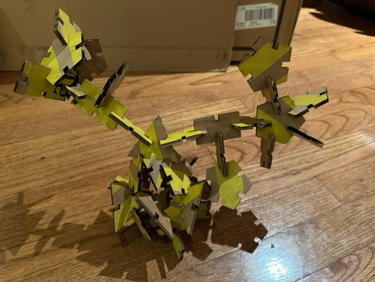

Assignment 2: Jumpy with Grasshopper

Here is all the documentation for assignment 2.
Preliminary Sketches/Ideas, Measured:
Now that I had a nice, simple set of shapes in mind, I set out to work in Grasshopper to create them. My first attempts did not go well:
I had to get some help from my tutor and watch some tutorials before I could work out the math that was going to allow me to set up shapes with notches in them.
After a lot of experimentation and late nights, I finally developed the shapes I was aiming for. There was a lot of math to work out, which was a struggle for me. Figuring out how to place the notch
rectangles in the right places on each shape required a full set of GH code that was separate from the code setting up the initial shape, and required a third code set to tie everything together.
First is the triangle:
Next is the pentagon/polygon:
Finally, the rectangle:
Finally it was time to convert the GH files into Ai in the MILL:
And run my laser cutting:
Now that I had my cut pieces, what to make with them? It was definitely going to be abstract:

My final results were what I expected - abstract:
But could it survive the shake test?
Lessons were learned:
I had only just firgured out how to operate basic functions in Rhino when this assignment was given to us. I had less time to do it, given that we had long ago planned a weekend getaway to celebrate my 50th birthday.
Grasshopper is not intuitive, but once I had it demonstrated to me at a moderated speed with all of the functions explained it started to make a lot more sense to work with. I wish we'd had a lot more time to learn
Grasshopper (and to have practiced Rhino) before this assignment, but sometimes, I guess, we have to cram.
Source files can be found here:
RectangleforCutout.3dm
GrasshopperPolygon3dm.3dm
TriangleforCutout.3dm